Performance Discussion Form Dashboard
Transforming a legacy data table into a dashboard that brings analytics and actionable work together.
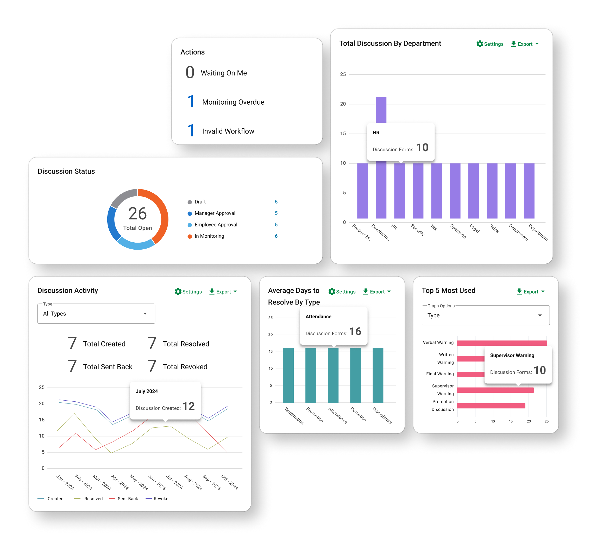
00. Intro
The Performance Discussion Form (PDF) is where managers document employee performance events — recognition, coaching, warnings, and Performance Improvement Plans. These records matter beyond the moment they are created. They become evidence the organization may rely on when recognizing milestones, reviewing decisions, or responding to compliance concerns.
Challenge
The PDF module was built on a framework nearly two decades old. Its landing page was essentially a flat, text-heavy table. There was little hierarchy, limited status logic, and no clear distinction between records that required attention and records that were simply part of the historical record.
Outcome
Redesign the landing page into a clearer, more structured dashboard that separates actionable work from historical insights, strengthens status visibility, and helps users quickly understand what matters now versus what matters over time.
My Role
I was the sole designer on this project, partnering closely with the PM on scope, priorities, and product requirements. I led the research synthesis, information architecture, interaction model, data visualization, and visual design.
Timeline
Q4 2024 Phase 1
Q2 2025 Phase 2
Team
Lead designer and Product Manager
01 · Redesigning a redesign
Phase One
When I first joined the project, the scope was already set. The four widgets had been defined, and the design request was straightforward: “Design a dashboard with four widgets to visualize important PDF data.”
With a pressing timeline and a clearly defined scope, the team prioritized moving forward with the existing framework and dashboard direction. I also explored opportunities to move the experience to the newer React framework and conduct deeper research into the data and user needs, but these were ultimately outside the scope of this phase. The team moved forward with the initial MVP by adding the defined widgets directly above the existing data table.
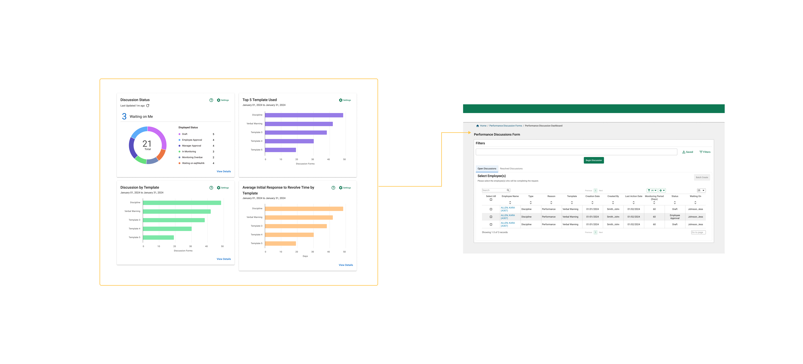
Before delivering the project to developers, I documented the design suggestions and risks I identified during this rapid design phase:
1. Old framework: The existing framework limited our options and design flexibility for widgets and data visualizations. We could provide users with more ways to interact with the data, but the framework restricted what we could do.
2. Disjointed analytics and data table: The analytics felt disconnected from the existing data table, making these two important elements feel unrelated when placed on the same screen.
3. Redundant data display: There was a risk of multiple widgets telling a similar story, providing more data without adding meaningful information for users.
4. Unclear and ambiguous status definitions: The complex status and step system could be confusing without further clarification.
02 · Research
Phase Two: Same data. Different jobs.
The project came back to design as part of a system-wide framework update on the development side. The new ticket added only one line to the original request: “Update design to React.” I saw this as an opportunity to revisit some of the risks we had identified in Phase One and take a more thoughtful approach to the redesign.
I proposed a structured project plan and a more thorough design timeline. But before redesigning anything, we started by validating what we had learned from Phase One.
User Interview
With the resources available, I conducted interviews and walked participants through the Phase One dashboard to gather feedback and understand how user actually use Performance Discussion Form. I focused on three key personas: f rontline managers , s upervisors and department leaders , and p roduct sales .
Recurring Topics

Most of the positive feedback was about finally having something new and more visually engaging on the page.
But when people talked about the actual widgets, the feedback was much more mixed. The information we chose to show didn’t always match what they cared about or needed to do.
Going into the research, I knew the dashboard had to serve different levels of users and balance both live and historical data. I assumed the main difference between these users would be how much data they needed to see.
That wasn’t really the case. The bigger difference was how they used the data. Different users came to the same dashboard looking for very different things.
Frontline Manager
Frontline managers work close to individual discussions. Their questions are immediate:
What needs my attention?
What is waiting on me?
Which discussion is stuck?
Multi-Team Leader
Leaders may oversee dozens of employees across teams or locations. They are less concerned with one pending form and more interested in patterns:
Where is documentation falling behind?
Which teams are unusually active?
Where might coaching be needed?
A department-wide count may mean very little to a manager responsible for six people. A single pending discussion may barely register for someone overseeing an entire region.
That distinction became the foundation of the redesign.
03 · Separate Action From Analysis
Once I understood the two roles, another problem became clear:
Live workflow data and historical analytics were competing for the same space.
My first dashboard direction placed both data types in a single shared structure.
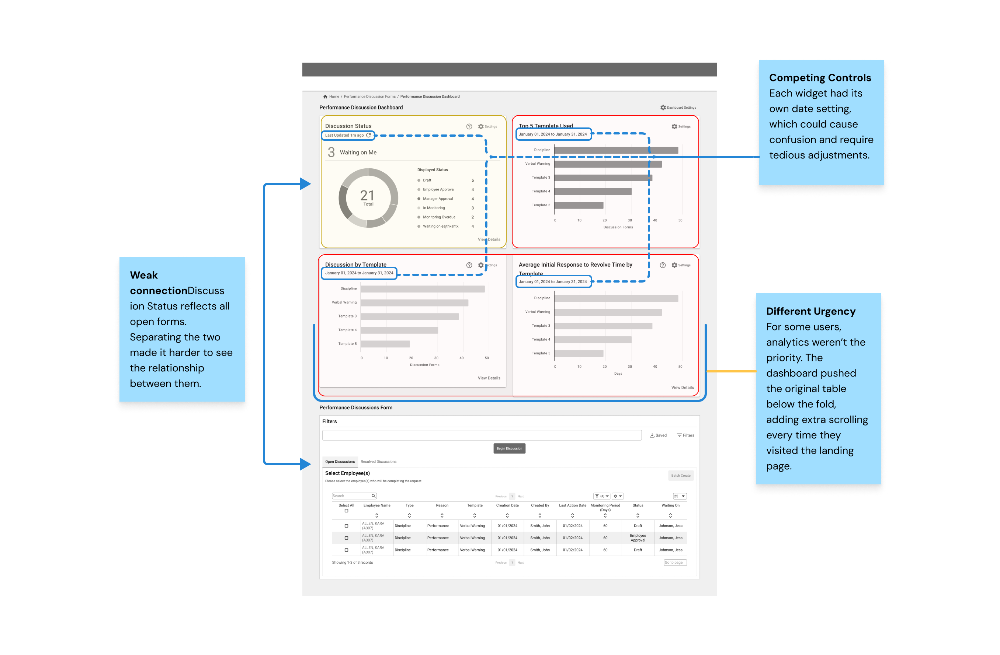
Instead of continuing to add more widgets into the same container, I reorganized the page around intent.
ACTIONABLE INFORMATION
Current discussions stay directly connected to the status table and answer questions about what needs attention now.
Selecting a summary value filters the records below, allowing users to move directly from signal → action.
HISTORICAL ANALYTICS
Trend-based reporting lives in a separate analytics card with one shared time range.
Because this information is valuable but less urgent, the card can collapse so current work remains visible by default.
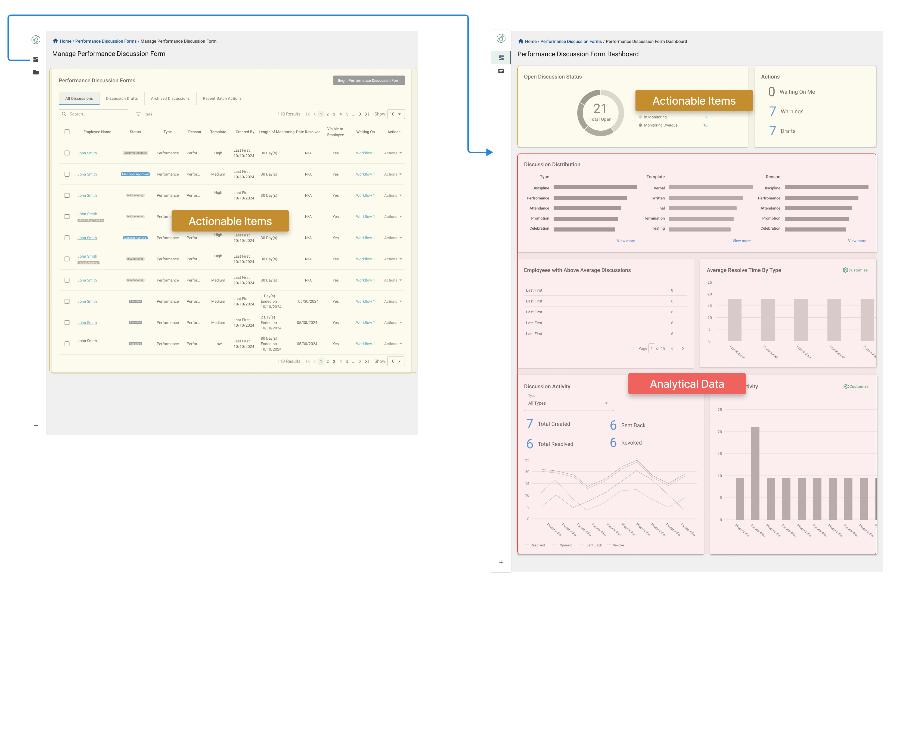
Iteration 1
This draft separated the analytics dashboard from the data table through a side navigation entry point, giving each more space and independence. Users could land directly on the dashboard, then access actionable items and the data table through the status widget when needed.
Feedback
Stakeholders liked the new widget arrangement, but the sidebar navigation didn’t align with the overall product direction.
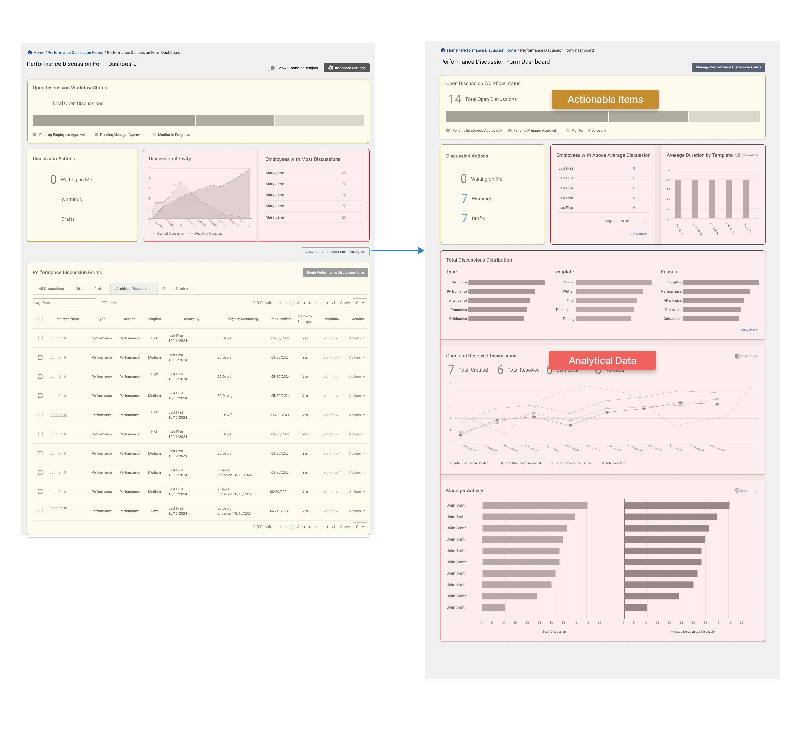
Iteration 2
I moved the entry point to the full analytics view to a button on the landing page. The landing page itself provided a quick view of both analytics and actionable widgets.
Feedback
Stakeholders liked having a direct entry point to analytics on the screen, but the module wasn’t ready to support the development of an additional page. The two types of data also still felt like they were competing for attention when placed in the same space.
Final Solution
The final direction keeps all data widgets on one page, with the flexibility to expand or collapse information based on what users need at the moment. This allows the dashboard to adapt to different priorities without separating the experience across multiple pages.
It also creates a clearer distinction between actionable and analytical data, making the information easier to understand and reducing competition between the two.
The status widget connects directly to the data table, allowing users to quickly filter actionable items while creating a clear visual connection between the summary and the records behind it.
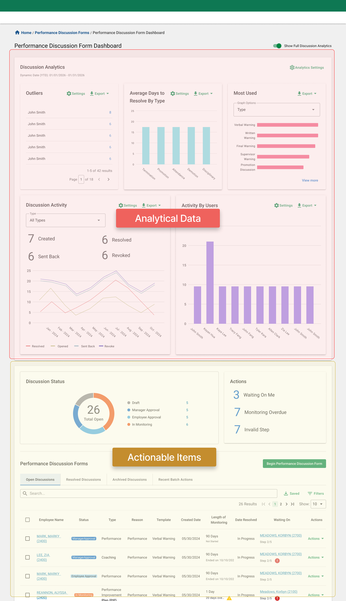
04 · Turn Counts Into Signals
One of the biggest challenges in this project was deciding what story the data should tell.
Through interviews with different types of users and conversations with stakeholders, I found that the first design had too much redundant information. Several widgets were essentially answering the same question in different ways.
For the new direction, I wanted each widget to have a clear purpose and support a specific user need. I reviewed every widget from the original dashboard and refined the titles and settings of the remaining widgets to make their purpose clearer.
05 · Make Status Mean One Thing
The legacy system had another structural problem. Its status field tried to communicate too much. Lifecycle stages, overdue items, workflow problems, and action requirements all appeared as versions of “status.”
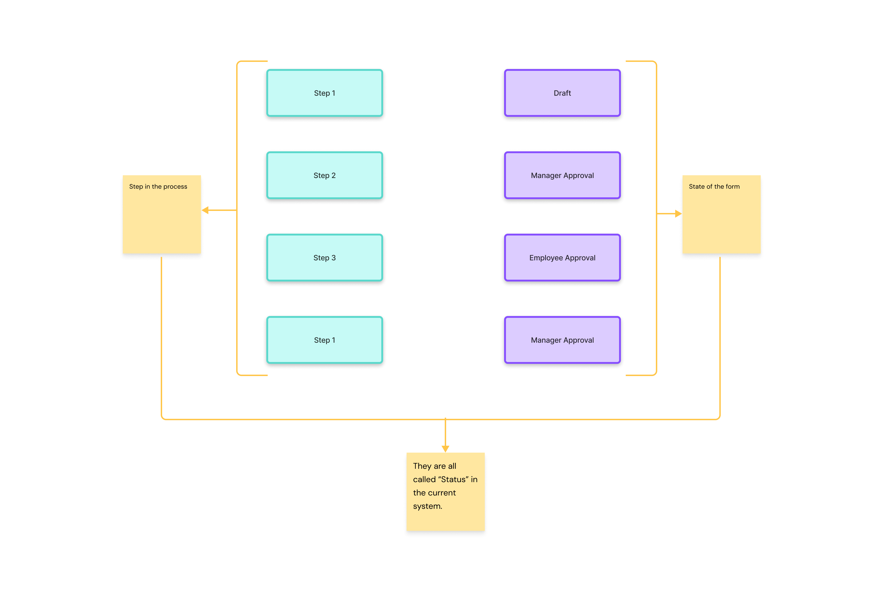
On closer review, those were actually two different concepts.
STATUS Where is this discussion in its lifecycle?
ACTION WARNING Is something happening that requires attention?
So I separated them.
THE LIFECYCLE
Draft → Employee Approval → Manager Approval → In Monitoring
Items requiring attention — such as Waiting on Me, Monitoring Overdue, or an invalid workflow — are surfaced separately rather than treated as lifecycle states.
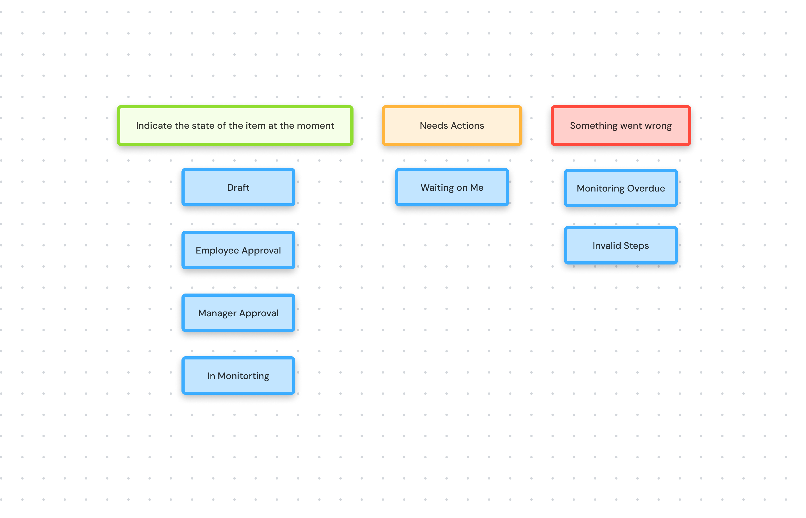
This approach reduces complex statuses and long status names by unifying them under clearer definitions, while also calling out items that need immediate attention.
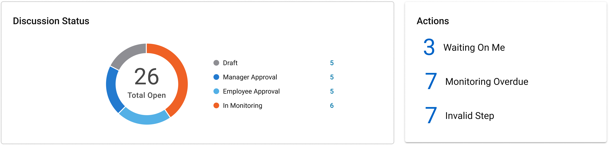
The same logic is reflected in the data table, bringing extra attention to rows with specific warnings or errors and giving users more confidence when managing a large volume of forms.
Because approval order can vary depending on configuration, the label alone still cannot communicate progress reliably. So I paired each approval state with a step counter:
Manager Approval · Step 2 of 4
Final Outcome
A dashboard organized around role, urgency, and meaning.
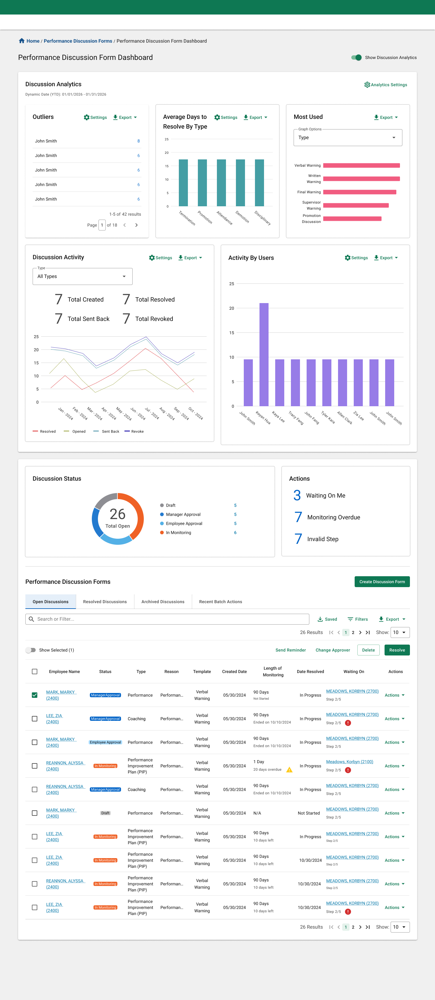
The redesigned experience now:
- Separates actionable workflow data from historical analytics
- Gives frontline managers clearer visibility into what needs attention
- Gives leaders stronger ways to identify patterns across teams
- Introduces a consistent lifecycle and action model
- Uses trends and outliers to turn raw counts into meaningful signals
The status and category model was identified as reusable in other areas of the platform with similar action-versus-history patterns, and the redesigned dashboard is now the top-priority initiative for the next PDF module development cycle.
Unique and Reusable System Pattern
The status and category model was identified as reusable in other areas of the platform with similar action-versus-history patterns.
The in-card widget filtering is also documented as reference for widget-table interaction
CURRENT STATUS
R edesigned dashboard is now the top-priority initiative for the next PDF module development cycle .
Validation
Reviewed and approved by
Client Side Users
Design Manager
Design Team Leader
Product Department Director
Development Supervisor
Development Team and Leader
Design Team Peers
The redesigned direction was reviewed with key product stakeholders and executive leadership team and tested again with senior managers who participated in the earlier research.
Feedback was especially positive around:
Data visualization, action vs. history separation and dashboard structure
The review helped confirm that the redesign was moving in the right direction — both for the people using the dashboard and for the broader product system.
Gap and Opportunity
There are still gaps and proposals that didn’t fit within the scope of the Phase Two MVP. I’ve documented the related findings from my research, and future iterations could explore more granular user permissions, extended drill-down capabilities, more robust widget redirection, greater flexibility and customization, AI-powered reporting, and stronger connectivity across the system.
Reflection
This project taught me not to get too attached to a solution, even when it feels certain. The design process wasn’t linear—we moved between research, design, testing, and iteration, constantly returning to the root problem and asking: Are we still telling the right story?
My biggest aha moment was realizing that we had two types of data serving different needs at different moments. It wasn’t enough for me as the designer to understand that distinction. The experience needed to make it obvious to the user.
Once that clicked, decisions around information architecture, hierarchy, and content grouping became much clearer. It changed how I think about organizing complex information and reminded me that asking the right question is often more important than jumping to a solution.
I also learned a lot from working closely with product partners. PMs often hold deep product knowledge, while design can help surface that knowledge by asking the right questions and challenging assumptions together. I’m grateful that my product partners stayed open to constructive feedback and worked through multiple rounds of iteration with me. That collaboration was one of the most valuable parts of this project.